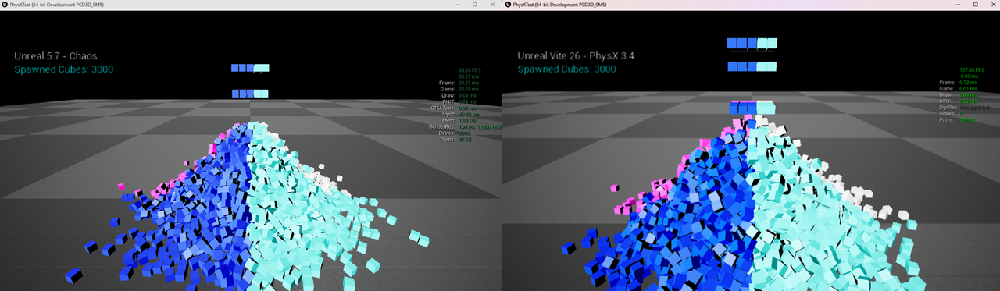

UE4 versus UE5 Cost Analysis
The performance gap is not one system. It is shader instruction counts, physics, character movement, memory, Slate, skeletal meshes, tick cost, render thread structure, the loss of Blueprint nativization, and volumetric shaders — each contributing independently.
This page documents where the measured cost differences between Unreal Engine 4.27 and modern UE5 come from. It exists because "UE5 is slower" is not actionable; knowing which subsystem regressed and by how much is what lets you decide whether a fork is worth maintaining.
Supporting measurements are collected in a public spreadsheet.
Materials and shaders
From UE 5.1, Shader Model 6 became the preferred rendering path, and general shader instruction count increased significantly for both the SM5 and SM6 paths. Subsequent versions expanded both instruction counts and permutation counts further.
Unreal Engine 4.27 produces lighter-weight shaders that deliver the same visual result, which translates directly into faster GPU time across the board — not just in scenes that use the new features.
 不同虚幻引擎版本中，相同材质工作的着色器指令数量比较
不同虚幻引擎版本中，相同材质工作的着色器指令数量比较
Shader instruction count for equivalent material work, by engine version. The count rises with each release on both the SM5 and SM6 paths, and every one of those instructions is GPU time spent without a corresponding change in the final image.
Physics
Chaos is significantly slower than PhysX across many workloads, largely from less efficient SIMD utilisation, comparatively poor multithreading, and generally less efficient engineering decisions.
Internal stress tests show Chaos performing over 5x slower than PhysX in heavily physics-bound scenarios. The gap is not limited to rigid body simulation: it also affects physics queries, collision calculation and transform propagation, which means projects that make little or no explicit use of physics simulation still pay a measurable CPU cost.

模拟3000个立方体，虚幻引擎5.7 Chaos帧率为33.26 FPS，对比Vite PhysX 3.4帧率为157.88 FPS。3000 simulated cubes. Unreal 5.7 with Chaos (left) 33.26 FPS at a 30.07 ms frame; Vite with PhysX 3.4 (right) 157.88 FPS at a 6.33 ms frame — a 4.7x difference in delivered frame rate.
The practical consequence is scale. The same CPU budget buys substantially more complex cloth simulation and destruction under PhysX. See PhysX Overview.
Character Movement Component
CMC has become progressively more expensive. Against Unreal Engine 5.6, version 4.27 performs 2.2–2.8x faster in movement and collision calculations, and that figure does not even account for PhysX's faster sweeps.
This dominates scenes with many players or AI characters, and directly limits the feasible scale of simulation. The 400 Characters CMC Bench scene exists to measure exactly this.
Memory
Overall memory usage has increased with each engine iteration. In a typical multiplayer map scene, Vite uses approximately 1 GB less total memory than UE 5.7, measured on the Stylized demo.
On memory-constrained targets — handhelds, Switch 2, base consoles — a gigabyte is not a rounding error. It is often the difference between a texture pool that holds and one that thrashes.
Slate and UI
From UE 5.0, Slate's rendering cost increased considerably, alongside a more complex system for handling Slate object updates, layout calculation and transformations. The rendering of UI itself became more expensive in the pursuit of higher UI rendering fidelity.
For UI-heavy games — which is most of them, once you count HUDs, inventories and menus — this is a persistent per-frame cost that never goes away.
Skeletal meshes
Skeletal meshes became more complex around 5.1 to 5.4. The base cost of a skeletal mesh component in 4.27 is far lighter.
This matters disproportionately because skeletal meshes are frequently the worst CPU offenders in a shipped game. Vite additionally ships an optimised skeletal mesh configuration as the default — see Engine Default Changes.
World tick and game thread
Newer UE5 iterations increased the general cost of the ticking systems, and made physics, Niagara and controller ticks heavier to run. This is a flat tax on every frame, independent of what your game does.
Render thread
With the deeper integration of Lumen, Nanite, VSM, Virtual Textures, TSR, Substrate, Chaos Cloth and Hair, the render thread became larger and more fragmented, and PSOs became heavier. This affects overall renderer performance in every circumstance, not only when those features are enabled.
Loss of Blueprint nativization
This one is frequently overlooked and is often the largest single factor in real projects.
The Blueprint VM is a slow runtime. For simple gameplay logic it is typically 50–80x slower than equivalent native C++. For algorithmic workloads — sorting, node operations, pathfinding — it can be 150–400x slower.
In Unreal Engine 4, Blueprint Nativization mitigated this by converting Blueprint bytecode into native C++ during packaging, producing code roughly 10x faster than VM execution. UE5 removed the feature.
Because most Unreal projects rely heavily on Blueprints — especially through plugins and third-party code that you do not control — retaining nativization can make UE4's game thread substantially faster in real-world projects, reducing input latency, improving responsiveness and allowing higher simulation scale.
Volumetrics, fog and engine shaders
There is a large performance regression in the systems and materials handling volumetrics, fog and sky, and in many other default engine shaders. The increased shader complexity compounds on top of the base material cost increases described above.
 比较不同引擎版本中默认体积、雾和天空材质的着色器成本
比较不同引擎版本中默认体积、雾和天空材质的着色器成本
A second measurement over the same systems. Because the regression is in the default engine shaders themselves, it applies whether or not a project authors any custom volumetric material.
Core class base costs
Beyond any individual system, the base cost of core engine classes increased in both execution time and memory footprint, across both game and render logic.
 各引擎版本核心引擎类别的基本成本比较
各引擎版本核心引擎类别的基本成本比较
Base cost of core engine classes by version. This is cost paid before any game code runs, which is why it shows up even in projects that use none of the newer features.
Per-class figures are in the measurements spreadsheet, and class sizes per version are broken out in the size of class report.